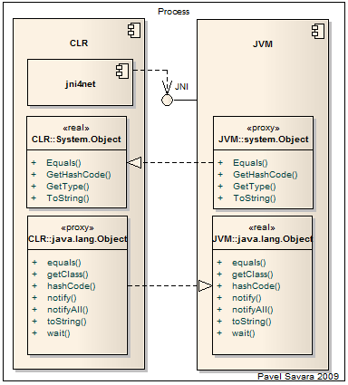

jni4net
bridge between Java and .NET (interprocess, fast, object oriented)
How it works

Using reflection we grab public method signatures for core classes of .NET and Java and generated proxy classes for the other side.
We have .NET/managed implementation of
JNI.
We use JNI to forward the call from
.NET proxies to methods on real Java objects.
(explanation)
We use JNI to register .NET implementation of native methods of
Java proxies to forward call to methods on real .NET objects.
(explanation)
Features
- Interprocess - it means that both VMs are in same process. Any call uses same thread and same stack for both environments. It's relatively fast.
- Proxies - we use proxies which look like and behave like the real/original object. Marshaled by reference except for primitive types and arrays.
- Garbage collected - if you don't create cycle between VMs heaps, the proxies and instances are collected and released properly.
- Proxygen - tool to wrap your own library. Works with reflection, so you need just .jar or .dll. You could wrap any CLR or JVM class.
- Core - core classes of JDK and .NET framework are already included in jni4net. Using that reflection and invocation across the boundary is possible.
- Samples - are included with the binaries. See ReadMe.txt in directories
- Platforms - at the moment only Windows 32 and 64 bits. CLR 2.0, JRE 1.5 and above.
- License - opensource, GLP and LGPL
- Status - currently Alpha quality. Lot of work ahead, lot of ideas, lot of missing features, looking forward to community feedback.
using net.sf.jni4net;
public class Program
{
private static void Main()
{
Bridge.CreateJVM(new BridgeSetup());
java.lang.System.@out.println("Greetings from C# to Java world!");
}
}
import net.sf.jni4net.Bridge;
import java.io.IOException;
import java.lang.String;
public class Program {
public static void main(String[] args) throws IOException {
Bridge.init();
system.Console.WriteLine("Greetings from Java to .NET world!");
}
}